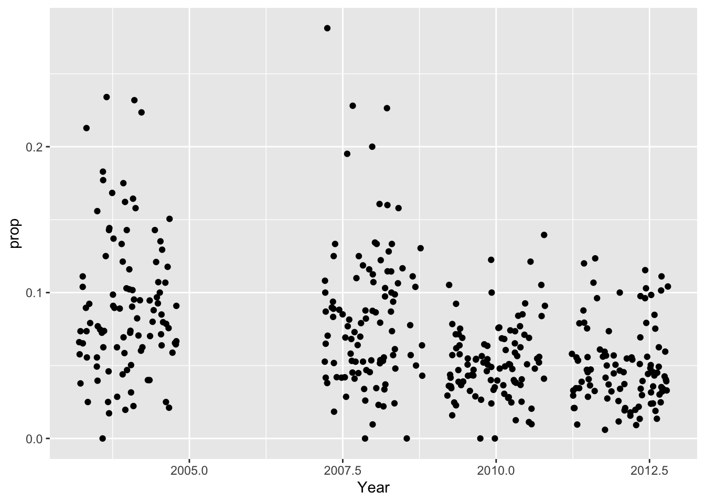
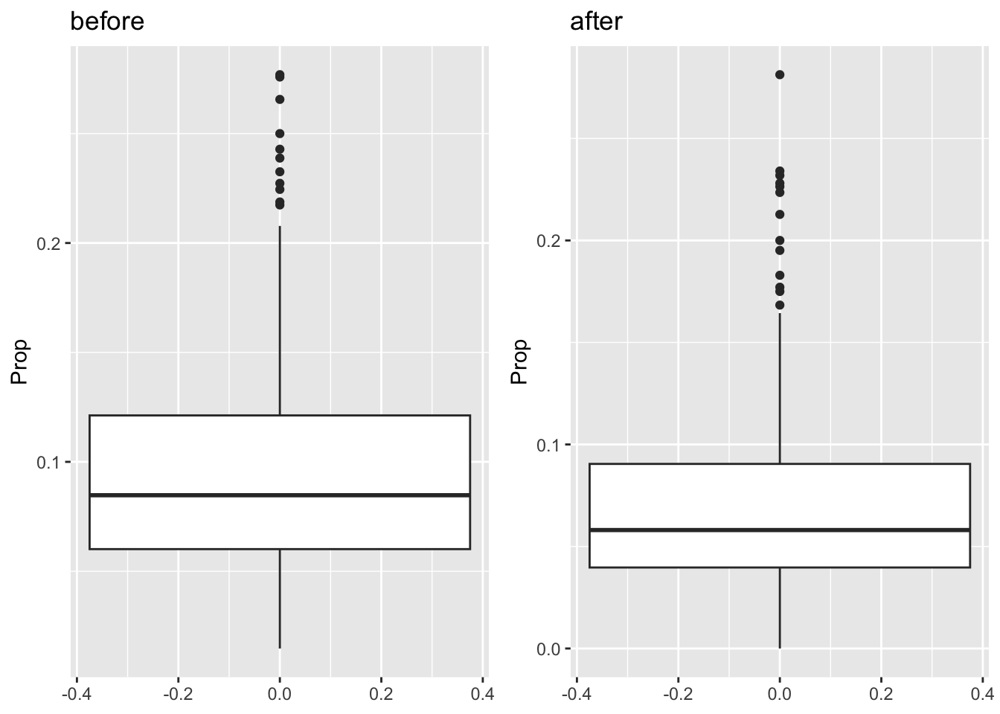

Data Analysis Report- group 10
Exploratory Data Analysis
Question 1
- Figure 1 shows a slight decline in proportion. However there seems to be a lot of overlapping points so we will jitter it to get a better look at the relationship.
- Plotting the jittered scatter plot Figure 2 shows a clearer decline in proportion of susceptible children from 1998 to 2012, but it should be noted that there is missing data in 2006 so this may make the graph harder to interpret. In addition we can see that towards the end of the time period there is less variance in the proportion of susceptible children, and we will investigate this further.
| Name | dataset |
| Number of rows | 707 |
| Number of columns | 4 |
| _______________________ | |
| Column type frequency: | |
| numeric | 4 |
| ________________________ | |
| Group variables | None |
Variable type: numeric
| skim_variable | n_missing | complete_rate | mean | sd | p0 | p25 | p50 | p75 | p100 | hist |
|---|---|---|---|---|---|---|---|---|---|---|
| Year | 0 | 1 | 2004.86 | 4.89 | 1998 | 2000.00 | 2004.00 | 2010.00 | 2012.00 | ▇▃▃▃▇ |
| N | 0 | 1 | 93.07 | 38.13 | 10 | 65.00 | 88.00 | 114.00 | 272.00 | ▃▇▃▁▁ |
| Y | 0 | 1 | 7.00 | 4.27 | 0 | 4.00 | 6.00 | 9.00 | 29.00 | ▇▇▂▁▁ |
| prop | 0 | 1 | 0.08 | 0.05 | 0 | 0.05 | 0.07 | 0.11 | 0.28 | ▇▇▃▁▁ |
- We used the skim function to have a look at the histograms for the different variables. So we can see that the number of children in each IZ is normally distributed, but if we look at the histogram for the Y variable, number of children susceptible to measles in a given IZ, is not normally distributed which would suggest that there is another variable which is impacting the number of susceptible children. This supports the question of interest that there was a change in children’s susceptibility to measles overtime.
| cor |
|---|
| -0.3553176 |
- We calculated the correlation coefficient. It produced a value of -0.3553176. Whilst this is a weaker result, it is not insignificant, and does suggest there is a decreasing relationship. Again, this supports the idea that susceptibility has decreased over the years.
- So we can see also from the Figure 3 that the proportion of susceptible children is decreasing over the years. In particular, we can see that the mean is decreasing slowly overtime, and in the later years it shows that there is less variation in the number of susceptible children, therefore it is becoming more steady and consistent.
Question 2
- So we can analyse the difference before and after the articles retraction in 2004, we have split the dataset into two smaller ones, one containing the data before, and one containing the data after the retraction.
| Correlation before | Correlation after |
|---|---|
| 0.01648565 | -0.3870859 |
- We calculated the correlation coefficient for the data before and after the retraction. We can very clearly see from the correlation coefficients that after the retraction that the was a significant change in relationship, as before there seemed to be no relationship as the value was 0.01648565, compared to after where the value was -0.3870859, which is clear difference, showing a decreasing relationship.

- Finally, we can see that in the data before the retraction Figure 4 there is not much a trend between year and proportion, it seems fairly constant. When we compare this to the graph for after the retraction Figure 5 we can see a trend, which is a decreasing trend.

- We can see that the mean is lower after the retraction of the article in 2004,, than the mean before the retraction, before 2004, Figure 6. In addition we can see that the range of data is narrower after the retraction showing that the results were less varied and more consistent. This would also suggest that the proportion of children that are susceptible is becoming more steady and consistent.
`geom_smooth()` using formula = 'y ~ x'
`geom_smooth()` using formula = 'y ~ x'- Before 2004 we can see there is no significant trend between year and the proportion of children susceptible, wheras after this we can see a decreasing linear trend between year and proportion of children susceptible to measles, Figure 7.